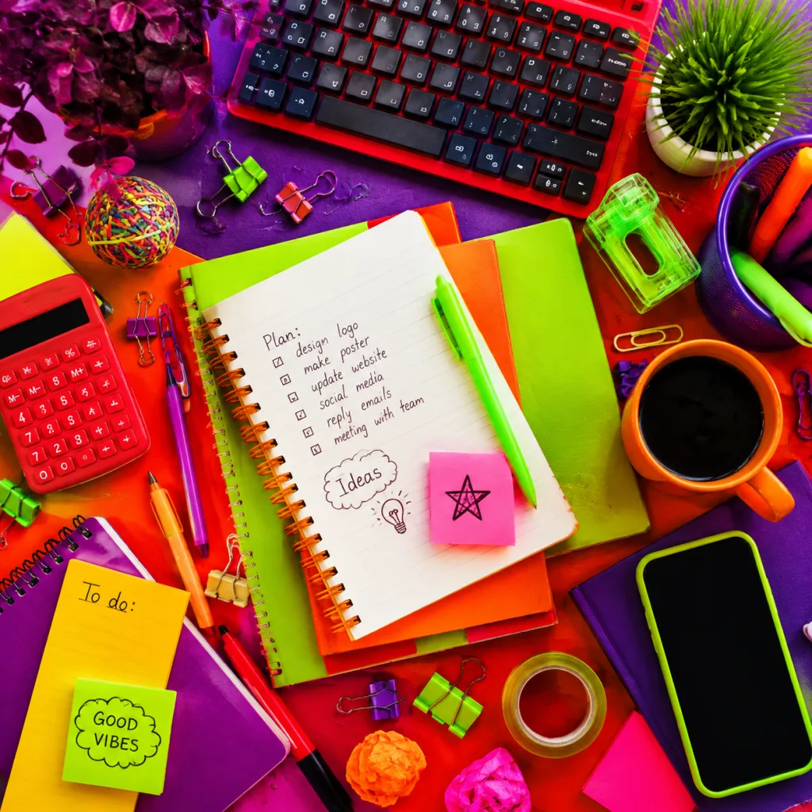
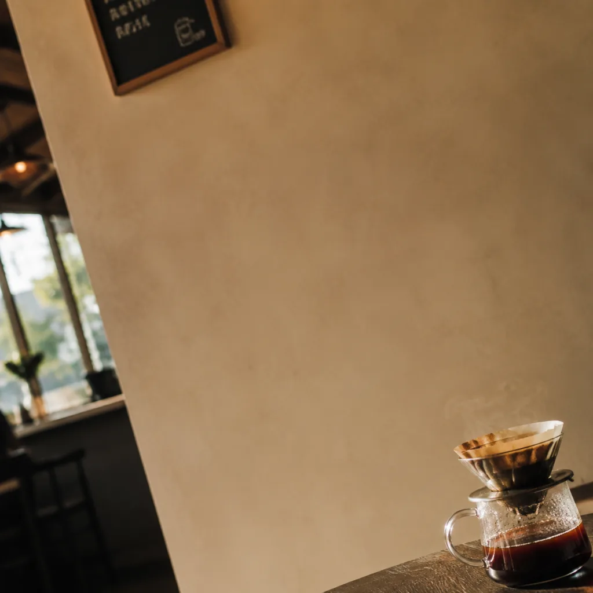
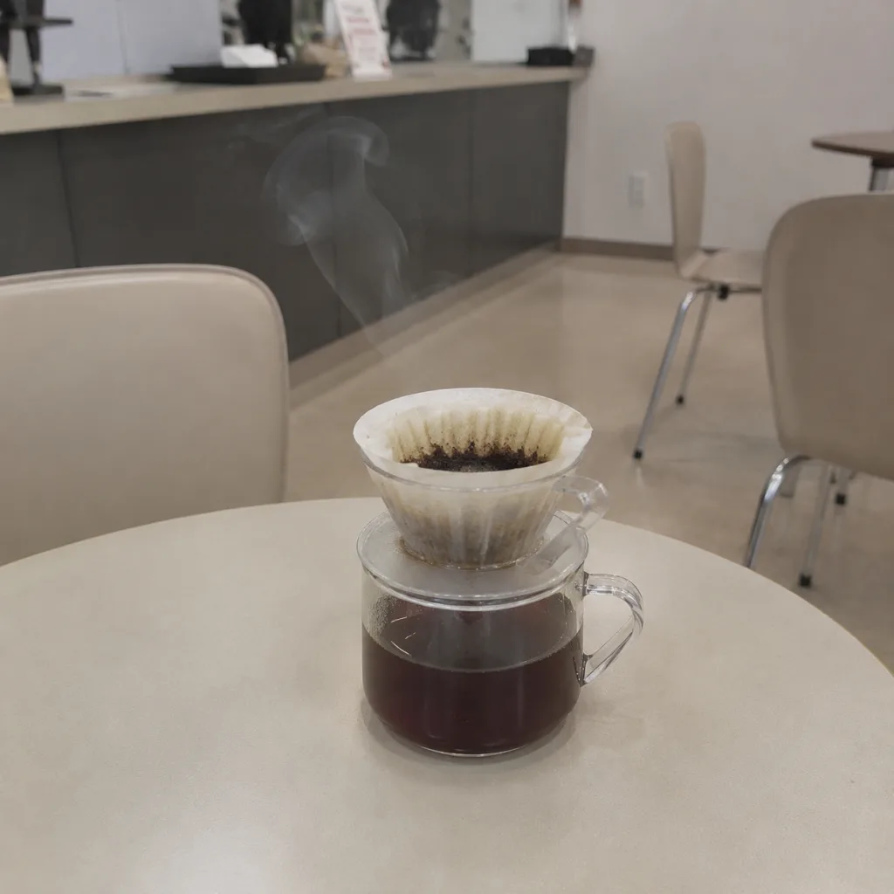
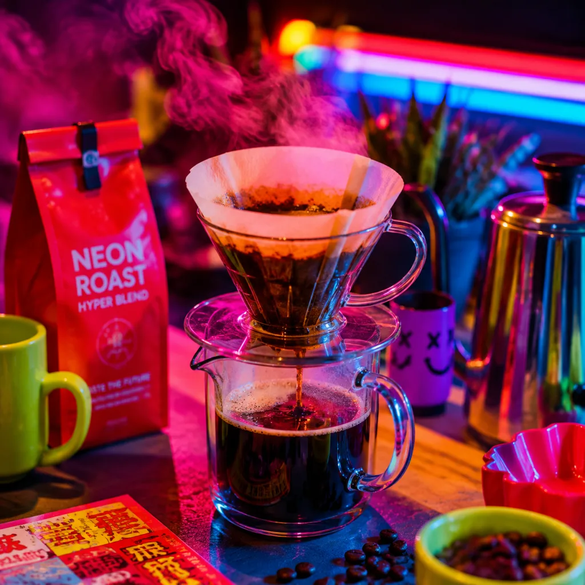

Generating Images: The Language of Composition, Light and Shadow, Color
Generating images follows the same rule as generating UI: vocabulary sets the ceiling. The trio — composition, light and shadow, color — three words each. Train your eye on three real-image sets, then assemble an image prompt you can use right away.
Say “a nice coffee poster,” and AI gives the training-data average. Say “rule-of-thirds composition, golden-hour rim light, low-saturation Morandi tones,” and AI suddenly has a blueprint. Photographers spent a century on this language — it's ready to use. The aesthetic trio: composition places the subject, light and shadow build volume, color sets mood. Three words each is enough. The drills below put two images side by side — Tufte's old move: comparison creates context; good and bad only show when they sit together.




Information-design elder Edward Tufte left seven principles in The Visual Display of Quantitative Information; About Face 4, Chapter 17, carried them into interface design. Two of them explain exactly how this page plays.
First: strengthen visual contrast — comparison creates context. Alone, a lighthouse shot won't tell you if the composition works; side by side, rule of thirds vs dead center is instant. You answered the first three rounds so fast because comparison magnified the gap. That's also why good composition and good light “read at a glance”: the eye is a contrast machine — it just needs a side-by-side chance.
Second: show side by side in adjacent space, better than stacking over time. Flip one by one and you lean on short-term memory — by the fourth, the first is already fuzzy. Side by side, comparison rides the eye. So when AI outputs candidates, don't delete as you go — gather them and compare together.
Doubt that side-by-side is faster? Run a trial with the six images from the first three rounds. Task: find the “golden-hour rim light” shot. Hunt in carousel first, then switch to side-by-side — feel the gap.
Three rounds done — real work: you asked AI for four coffee-brand poster candidates; the client wants one tomorrow. Use the trio you just learned to pick a deliverable. Note the posture: lay all four side by side, then pick — Tufte's adjacent-space comparison.




Pick one block from each of the trio — what you assemble is a prompt you can send straight to an image model. Swap the subject line for your own scene and it's ready.
The aesthetic trio directs image gen: composition for placement, light and shadow for volume, color for mood — three words each.
Picking and generating share one vocabulary: if you can say “rule of thirds,” “rim light,” “low saturation,” a four-pick has grounds — delivery isn't luck.
View candidates side by side: comparison creates context; adjacent space beats flipping one by one. Tufte's two principles are the method under this page.
Next image gen, write all three lines — composition, light and shadow, color — before you send; when the output is off, check which line was unclear.
Source: Original to Xiaoshan Academy's Taste Engineering series; demo images on this page generated with GPT Image 2; some design principles adapted from About Face 4: The Essentials of Interaction Design, Chapter 17.